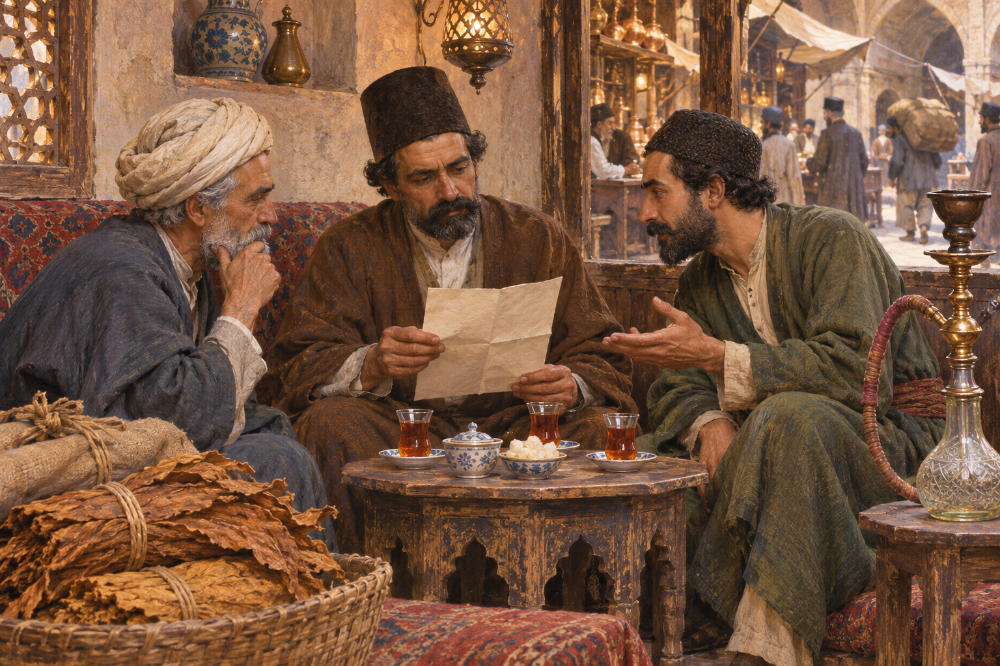

중동아프리카 / 이란 · 역사
이란 담배 불매운동 — 피우지 않는 행동은 어떻게 왕의 계약을 바꾸었을까
1891~1892년 독점권과 일상의 거부, 취소 뒤의 배상과 차입의 배경과 전개, 이후의 변화를 살펴봅니다.
이야기 읽기국가와 이야기
역사와 도시, 작품과 일상에서 이곳의 이야기를 만납니다.
국가 이름은 이야기를 찾기 위한 길잡이입니다. 과거의 문명과 공동체가 오늘의 국경과 꼭 일치하지는 않습니다.
아직 공개된 이야기가 없습니다.